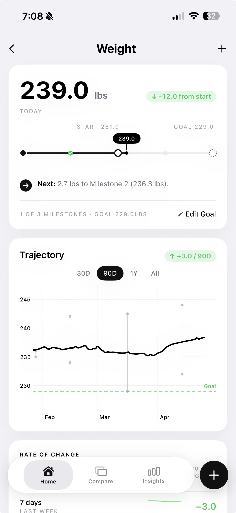

Six weeks into a recomp, the scale reads exactly what it did at the start. You've been hitting your protein target, training consistently, eating at maintenance. Nothing has moved. You conclude it isn't working and switch to a cut.
That's the most common recomp mistake. Not the diet. Not the training. The timeline expectation.
Body recomposition — simultaneously losing fat while gaining muscle — is one of the slowest measurable processes in fitness. The people who succeed at it are not doing anything different at week six. They're just still doing it at week sixteen.
The Month-by-Month Recomp Timeline
What follows is a realistic timeline for an intermediate lifter — 1–4 years of consistent training, body fat in the 12–18% range for men or 20–27% for women, eating within 100–150 kcal of true maintenance, protein at 0.8–1g per lb of bodyweight.
| TIMEFRAME | WHAT'S HAPPENING | WHAT YOU'LL NOTICE | WHAT THE SCALE SHOWS |
|---|---|---|---|
| Weeks 1–4 | Adaptation phase. Muscle glycogen and water are rebalancing as calories shift. No measurable fat loss or muscle gain yet. | Nothing visible. Possibly minor scale fluctuation (±2–4 lbs of water). Energy may dip slightly. | Flat or slightly down from water loss. Misleading — do not draw conclusions yet. |
| Weeks 5–8 | First measurable changes begin. Muscle protein synthesis is elevated from training. Fat oxidation is occurring but slowly. | Clothes may fit marginally differently. Pumps in the gym may feel different. Energy stabilizes. | Still flat within ±2 lbs. This is the period most people quit. Do not quit here. |
| Weeks 9–12 | First clearly detectable change in body fat % and lean mass. If you have a body fat measurement from week 1, the delta should be visible now — typically 0.5–1.5% BF drop with a small FFMI increase. | Visibly leaner in the mirror. Strength is maintained or slightly up. The physique "looks different" without a scale change. | Scale may still be flat. This is the moment a progress photo comparison from week 1 pays off. |
| Months 4–6 | Compounding effect of months of consistent signaling. Fat loss of 3–5 lbs and muscle gain of 2–4 lbs is achievable — resulting in minimal scale change but significant body composition shift. | Clearly visible to others. Strength numbers have held or improved. Fitting into clothes differently. | Net weight change: often 0–3 lbs total. Body composition change: dramatic by comparison photo. |
| Beyond 6 months | Rate of change slows unless you are a true beginner or returning from a break. Advanced intermediates may need to switch to deliberate bulk or cut phases to continue progressing. | Diminishing returns signal it may be time to shift strategy. | Progress in body fat % slows. Reassess phase choice. |
What Makes Your Recomp Faster or Slower
The timeline above assumes ideal conditions. These variables can shift your results by weeks in either direction:
Training age
Beginners recomp fastest — often visibly within 6–8 weeks. Intermediate lifters (1–3 years) are the core audience for recomp and typically see results in 10–16 weeks. Advanced lifters (4+ years near their FFMI ceiling) recomp very slowly. If you've been lifting for 5+ years with good form and progressive overload, a dedicated bulk or cut will likely outperform recomp.
Calorie precision
Recomp has the narrowest calorie window of any phase. If you're in a 300 kcal deficit you're cutting, not recomping. If you're in a 300 kcal surplus you're doing a lean bulk. The target is within ±100–150 kcal of true maintenance. This is hard to hit without tracking, which is why most informal "recomps" are actually slow cuts or slow bulks without anyone noticing.
Protein intake
Research consistently shows that protein at 0.7–1g per lb of bodyweight is the primary driver of muscle retention and growth during a recomp. If you're eating at maintenance with only 0.5g/lb of protein, your body will not have the substrate to build muscle regardless of how well your training is programmed. Protein is non-negotiable. Everything else is secondary.
Sleep and recovery
Muscle protein synthesis peaks during sleep. Studies show that sleeping under 6 hours per night significantly reduces anabolic signaling and increases cortisol — making simultaneous fat loss and muscle gain measurably harder. If your sleep is consistently poor, recomp results will be slower than the timeline above suggests regardless of how good your training and diet are.
Why the Scale Will Lie to You the Entire Time
In a successful recomp, your scale weight changes very little. If you lose 4 lbs of fat and gain 4 lbs of muscle over 16 weeks, the scale reads the same number it did on day one. Most people interpret a flat scale as evidence that nothing happened. The opposite is true — something significant happened, and the scale simply cannot show it.
Water weight compounds this problem. A single high-sodium meal, a hard training session, hormonal fluctuation, or even a change in sleep schedule can shift scale weight by 2–4 lbs overnight. These swings have nothing to do with fat gain or muscle gain. If you're tracking bodyweight day-to-day without a rolling average, you're reading noise as signal.

A 90-day rolling trajectory — not a single weigh-in — is the only useful weight measurement for a recomp. Even that only tells you half the story. To confirm a recomp is working, you need body fat percentage and lean mass tracked alongside it.
How to Tell If Your Recomp Is Actually Working
There is one reliable signal pattern that confirms body recomposition: scale weight stays flat while body fat percentage drops and FFMI (Fat-Free Mass Index) rises.
If all three are flat, nothing is happening — check your calories and protein first, then your training progressive overload.
If body fat is dropping but FFMI is also dropping, you're cutting while losing muscle — increase protein immediately and consider adding 100–200 kcal to daily intake.
The challenge is that most people check their body fat once, declare it their baseline, and never get a comparable measurement until months later. Progress photos taken under consistent conditions — same lighting, same time of day, same pose — give you the visual evidence that no scale can provide.

A side-by-side photo comparison from month 1 to month 3 often reveals visible changes that were imperceptible week-to-week. The 23% body fat delta shown in the comparison above would not have been detectable on a scale. It required a visual record to confirm.
Check-In Consistency: The Non-Negotiable
The single biggest predictor of whether you'll detect your own recomp progress is whether you take consistent check-in photos. Not random selfies — standardized photos: same pose, same time of day, same lighting, ideally weekly.
The reason is straightforward. Day-to-day changes in body composition are invisible to the human eye. Week-to-week they're borderline. Month-to-month they're unmistakable — but only if you have a month-one photo to compare against.

The streak mechanic exists for exactly this reason. A 12-week consistent check-in record gives you a data-rich comparison baseline that removes all ambiguity about whether your recomp is working. Miss 8 of those 12 weeks and you're left guessing.
See Your Recomp Progress Between Weigh-Ins
GainFrame tracks body fat %, FFMI, and lean mass from your progress photos — so you can confirm your recomp is working before the scale does.
Download GainFrame FreeRed Flags That Your Recomp Isn't Working
After 12 weeks with no detectable change in body fat % or FFMI, something is off. The most common causes:
| RED FLAG | MOST LIKELY CAUSE | FIX |
|---|---|---|
| Scale weight trending up steadily | Eating above maintenance — this is a slow bulk, not recomp | Audit calories; reduce by 150–200 kcal |
| Scale weight trending down steadily | Eating below maintenance — this is a slow cut, not recomp | Add 150–200 kcal, prioritize protein sources |
| BF% and FFMI both flat after 12 weeks | Protein too low, training stimulus insufficient, or both | Check protein (target 0.8–1g/lb), audit progressive overload |
| BF% dropping, FFMI also dropping | Losing fat and muscle simultaneously — a cut with muscle loss | Increase protein to 1g/lb minimum; add 100–200 kcal |
| Strength declining in the gym | Underrecovery: sleep, stress, or caloric deficit too large | Prioritize 7–9 hours sleep; check calorie estimate accuracy |
When to Stop Recomping and Switch Phases
Recomp is a tool, not a permanent state. Here's when to transition:
- After 6 months with slowing results. If body fat % and FFMI have both been flat for 6–8 weeks despite correct nutrition and training, you've likely hit your recomp ceiling for this period. Switch to a deliberate lean bulk (200–300 kcal surplus) for 3–4 months, then reassess.
- When you fall below your target leanness. If your body fat drops below ~10% (men) or ~18% (women) during a recomp, shift to a bulk to protect hormonal health and maximize muscle protein synthesis in a favorable environment.
- When you significantly exceed your target body fat. If your body fat rises above ~17% (men) or ~27% (women) while attempting recomp, the hormonal environment is no longer favorable. A focused 8–12 week cut will get you to a better starting point faster than continuing to recomp through elevated body fat.
- When your FFMI approaches your natural ceiling. For men, an FFMI above 23–24 indicates you're close to your natural limit. At this point, dedicated phases — lean bulk then cut — will produce better results than trying to simultaneously do both.